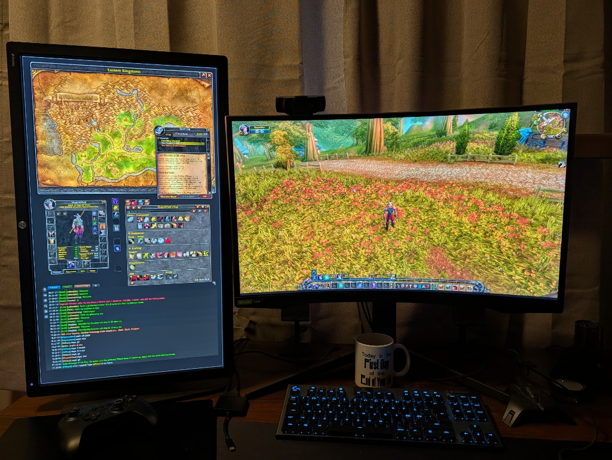
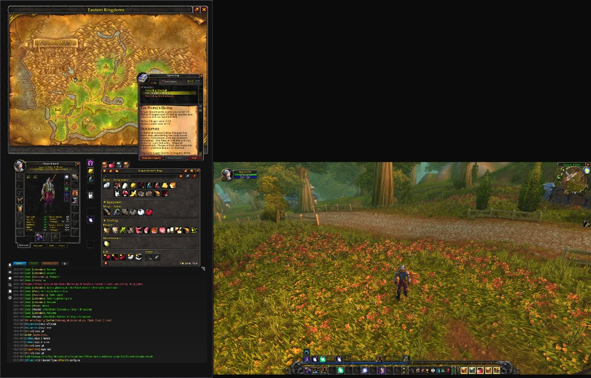
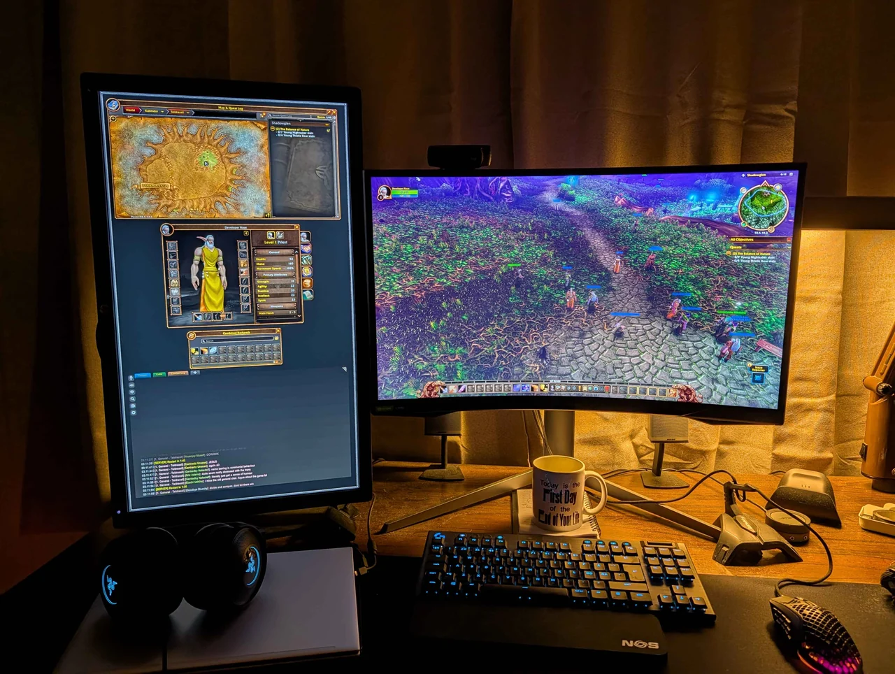
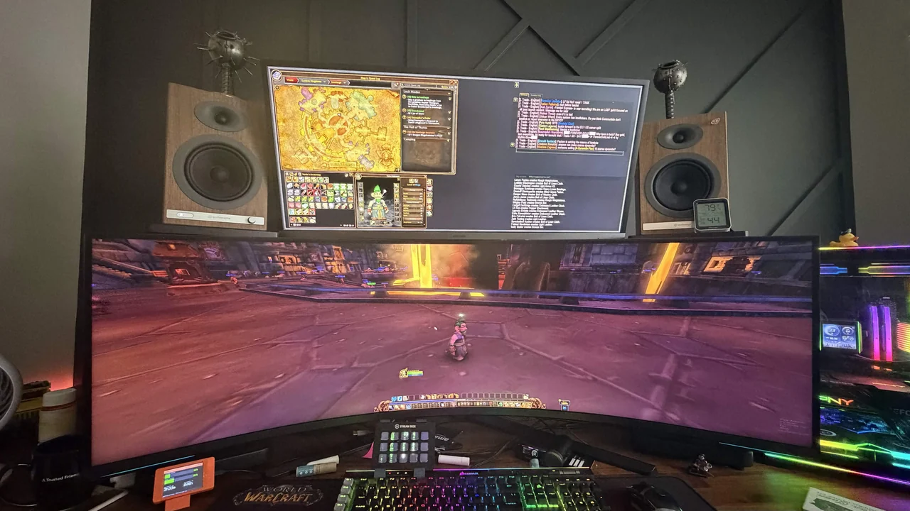
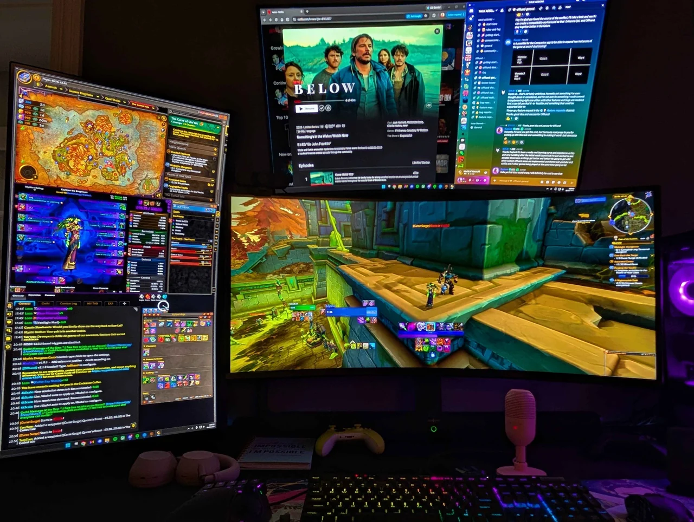
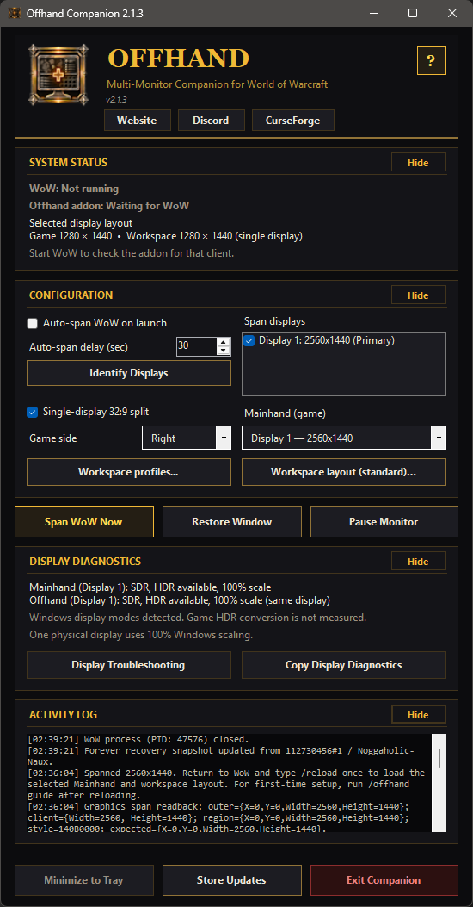

Join Discord
Join DiscordCompanion
Recommended for Windows
Let Offhand Companion place WoW across your chosen screens. It provides borderless placement and exact display geometry.
Use Companion
 Watch Offhand in action30-second in-game demo
Watch Offhand in action30-second in-game demo
WoW was built for one screen. If you've ever tried stretching it across two, you know the pain: your character is split by the bezel, and your bags open on the wrong monitor. Offhand fixes this by keeping your game on your Mainhand Monitor, and moving your map, bags, and UI panels out of the way onto your Offhand Monitor.


* Note: The black area in this raw screenshot represents physical dead space (where you do not have a monitor). The game seamlessly conforms to your actual screens.
Keep your world map, bags, and character sheet open on your second screen without cluttering your game view. They stay open even while you're moving around the world.
Play on your main screen with a perfectly centered character and combat HUD, exactly how you're used to playing. No weird camera stretching or misplaced action bars.
Designed specifically for WoW players running dual monitors, whether matching screens or asymmetrical portrait + landscape.

Mathematically isolates 3D viewport coordinates to your primary gaming monitor. Prevents the severe horizontal stretching, camera distortion, and bezel-splitting caused by raw desktop spanning.
Type /offhand in-game. The setup wizard validates your remembered canvas or exact Companion topology, guides seam and Mainhand placement, and creates a protected Mainhand HUD layout on clients with supported Blizzard Edit Mode APIs.
Turns your second display into an expansive Offhand Monitor. Keep your World Map, bags, character sheet, and quest log open simultaneously without frames fighting for screen space or closing when you walk.

Got a 4K main screen and a 1080p vertical monitor on the side? No problem. Offhand handles asymmetrical layouts, mixed resolutions, and different refresh rates naturally.
Choose one window-placement method: Companion (recommended for Windows), FancyZones, or manual placement. Follow only that method, then finish in WoW.

Keep WoW on Mainhand and your maps and panels on Offhand, with another display for Netflix, Discord, or other very important business. Your game and UI stay within reach while you keep an eye on everything else.
Install the addon, choose one way to place WoW, then finish the guide inside the game.
Install Offhand with CurseForge or WowUp for the WoW client you play. The addon is required for every method below.
Use only one of these methods to get started. For most Windows users, choose Companion. You do not need to complete the other methods or install both Companion and PowerToys.
Recommended for Windows
Let Offhand Companion place WoW across your chosen screens. It provides borderless placement and exact display geometry.
Use CompanionAlternative using Microsoft PowerToys
Use a saved PowerToys zone to position WoW. Choose this if you prefer FancyZones. Companion is not needed for this method.
Use FancyZonesAlternative with no extra window tool
Drag and resize WoW yourself. You may need to repeat that placement after launching the game.
Set up manuallyFollow the guide for your chosen method only. Do not let Companion and FancyZones both position the WoW window.
Once the window is placed, open /offhand guide and select the same method you chose above. Finish calibration and, where offered, Create Mainhand HUD Layout. Reload when prompted, then check that your game and panels are on the intended screens.
Start with the standard layout. You can explore custom workspaces, background images and additional settings later. These are not extra setup methods or required first-run steps.
The Microsoft Store Companion is the recommended Windows tool for positioning WoW. Start with its standard setup, then finish calibration inside the game.
Already using Companion successfully? Custom workspaces are optional ways to change its layout later.

Choose a PNG, JPEG, or WebP image, preview fill and fit behavior, and download a ready-to-install Offhand_UserMedia package. After installation and a full client restart, enable it from Offhand's Themes page.
The image is processed in your browser. It is not uploaded, retained, or sent to Offhand. The generated package contains a texture and declarative metadata, with no Lua or executable program code. It remains separate from the CurseForge-managed addon so normal updates cannot replace your background.
Direct answers to common questions about safety, compatibility, and setup.
Offhand requires World of Warcraft to run in standard Windowed mode so the window can span freely across your dual displays. You can set this in three ways:
WTF\Config.wtf file in Notepad and add or edit the line: SET gxWindow "1".
On clients with supported Blizzard Edit Mode APIs, press Create Mainhand HUD Layout on the setup wizard's final step. It clones the active Blizzard layout instead of directly moving protected frames, translates default anchors into Mainhand, aligns XP with the Action Button 1/backpack boundaries, and arranges stance, pet, possess, vehicle-exit, encounter, and extra-ability controls above it. Reload when prompted, then use Blizzard Edit Mode only for personal adjustments. Recovery & Preview can rebuild the generated layout later. Clients without those APIs use Offhand's direct compatibility layout; custom action-bar addons retain ownership of their own frames.
No. Offhand uses native Blizzard viewport coordinate APIs to constrain 3D camera rendering strictly to your primary monitor's pixel bounds. Your camera aspect ratio and field of view remain native 1:1, completely eliminating horizontal fisheye distortion.
No. Microsoft PowerToys FancyZones and ordinary manual resizing are complete standalone setup paths. Offhand remembers and validates the resulting canvas without communicating with another application. The optional Companion provides exact topology, borderless geometry, automatic spanning, and active recovery, but it may be exited after applying the span. Its Forever recovery bridge is only a compatibility fallback when /offhand diag reports that normal persistence is stale.
Yes. Offhand includes built-in support for packages created by the Background Studio. The studio converts PNG, JPEG, or WebP images locally in your browser and creates a separate, code-free Offhand_UserMedia addon folder. Your image is not uploaded. Install both folders side by side, then enable Use installed custom background from the in-game Themes tab. Keeping the media folder separate also prevents CurseForge updates from replacing your personal background.
Yes. FancyZones and manual placement use the canvas you confirm during setup, including portrait, landscape, mixed-resolution, stacked, and ultrawide arrangements. The optional Companion additionally passes the exact Windows rectangles for the selected Mainhand and workspace displays, including negative coordinates and unequal alignment.
For one super-ultrawide, select only it in the Companion, enable Single-display 32:9 split, and choose which half contains the game. For a 32:9 game screen plus a separate workspace screen, leave split mode disabled, select both displays, and choose the 32:9 display as Mainhand (game).
Offhand rejects mismatched saved geometry and restores a safe full-window viewport. With FancyZones or manual placement, restore the intended window before reapplying the remembered canvas. The Companion also remembers displays by Windows identity, refuses to collapse a two-display profile onto the remaining screen, and can restore a bordered Mainhand window while active.
The in-game addon uses standard Blizzard UI APIs. Companion and FancyZones perform a comparable desktop-window-management role for this workflow: they resize or reposition ordinary Windowed WoW and are designed not to automate gameplay, send game input, inspect game memory, inject code, or modify game files. Companion can also refresh Offhand's guarded Forever recovery bridge while WoW is fully closed when that compatibility path is needed.
For Windows, install it from the official Microsoft Store listing. Microsoft reviewed and signs the Store package, and Microsoft Store manages its updates. Linux/Wine users and anyone who prefers a direct portable download can use the official GitHub release, compare its SHA-256 hash with checksums-sha256.txt, and verify its GitHub artifact attestation. The Companion does not require administrator access, install a service, inject into WoW, collect telemetry, or read browser data or credentials. Store installations open Microsoft Store for updates; portable installations query GitHub only when you select Check for Updates. Full behavior, build, and verification details are published in the security guide.
The Store package passed Microsoft certification and is signed by Microsoft. Microsoft Security Intelligence also reviewed exact earlier portable hashes without retaining a malware detection. Some VirusTotal engines may still assign the separate unsigned GitHub Companion generic machine-learning or heuristic labels; each vendor controls its own verdict. An Edge “isn't commonly downloaded” message is a separate SmartScreen reputation notice. VirusTotal and vendor reviews are useful evidence, but neither a small detection count nor a clean result proves safety. Review the open source and documented behavior, and verify the official checksum and GitHub build provenance before running a portable copy.
None of this guarantees Blizzard approval or account safety. Microsoft authorship, Store availability, open-source code, and security scans do not constitute Blizzard authorization. Blizzard alone interprets and enforces its agreements, and its EULA states that the platform may monitor for unauthorized third-party programs. Review the current Blizzard EULA and the anti-cheating agreement, use any desktop utility at your own discretion, and stop using it if Blizzard guidance changes.
Offhand supports WoW Forever (1.60.x), Retail, Classic Era and Hardcore, and progression/Anniversary Classic clients. Forever has a distinct Mainline-style UI and therefore uses Blizzard Edit Mode for protected action bars and combat frames.
Forever protects action bars, unit frames, and other combat UI. Offhand can safely restore ordinary workspace panels such as the map, character frame, backpack, and chat, but protected frames must remain owned by Blizzard Edit Mode. The setup wizard therefore creates and selects a Mainhand-safe Blizzard layout through its final player-click action. Use Blizzard Edit Mode for personal fine-tuning, and use Recovery & Preview to rebuild or designate the layout later.